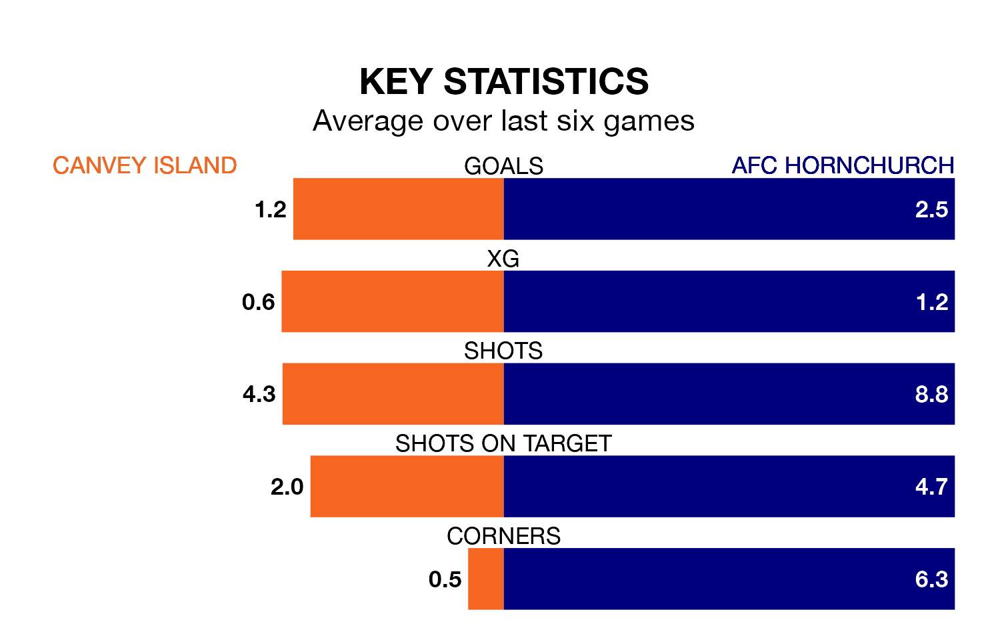

AFC Hornchurch travel to the Brockwell Stadium for Monday's match against Canvey Island looking to bounce back from defeat last time out in the Isthmian Premier Division.
Hornchurch, who sit top of the league after 35 games, fell to a 2-1 home defeat to Wingate and Finchley on Saturday.
They face a Canvey Island side who picked up a win in their last match, a 2-0 victory against Whitehawk, and who sit 17th in the table.
With 86 goals in 35 games so far this season, Hornchurch are the league's highest scorers with 2.5 goals per game. And they are conceding fewer than average, letting in 27 goals at a rate of 0.8 per game.
Canvey Island, meanwhile, are below average scorers, with 1.5 goals per game, compared to a league average of 1.6. They have conceded 1.9 goals per game.
In the last 10 years, Canvey Island and Hornchurch have played each other on six occasions. Canvey Island won two of them, Hornchurch three, and they drew once.
On average, the Gulls scored 1.0 goal and Hornchurch 1.7 in those matches.
Their last meeting was on December 23, when Hornchurch won 2-0 at home.
The Gulls are in disappointing form in the Isthmian Premier Division, with one win and two draws from their last six games.
With five wins and one loss over that period, the away side's form is much better – they have taken 15 points from 18, compared to the hosts' five.
Updated: 10:31 (UTC), 31/03/24